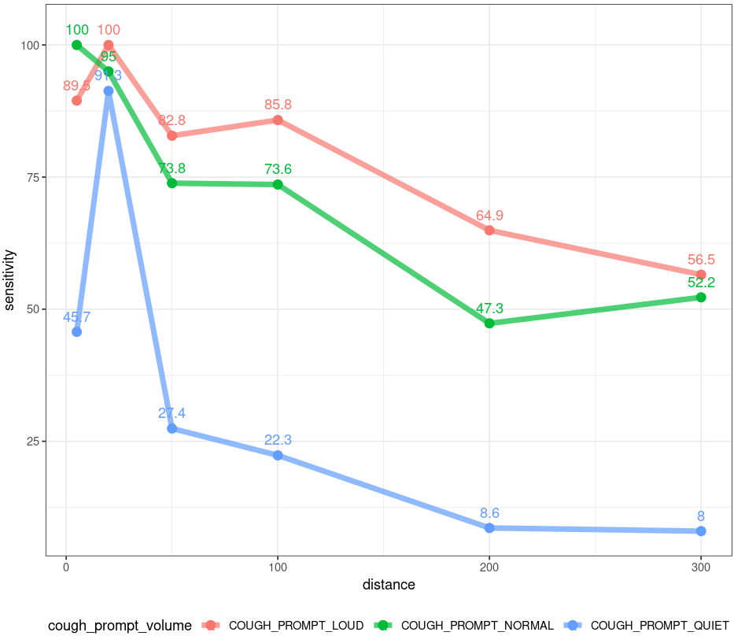

The cough detection algorithm is optimized to detect coughs at a distance of within 90 centimeters (approximately 3 feet). Field tests have been carried out to quantify the effect of the distance from the mic to the mouth of the person coughing in terms of system sensitivity. The below is a visual summary of those tests’ results.

Further field tests are in progress.